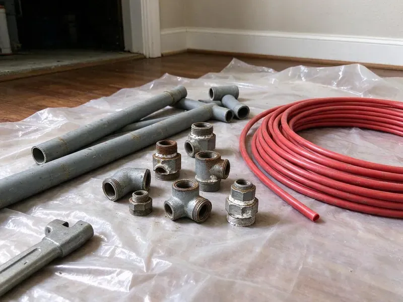

Water Softener Replacement in Kannapolis, NC
HFN Plumbing replaces water softeners across Kannapolis, NC, usually in one visit, with a hardness test before and after.
- Air-Gapped Drain Lines
- Loop and Bypass Valve Installs
- Same-Day Softener Swaps
- Programmed Before We Leave
Replace Your Softener in Kannapolis, NC.
Most softener replacements are installed and regenerating within a couple of hours.
Softener Replacement Throughout Kannapolis, NC
HFN Plumbing replaces old timer-based and failing water softeners with metered systems that regenerate only when the resin needs it. After testing hardness and checking the loop, we pick a resin capacity for your household, often 32,000 to 48,000 grains. Bigger homes go higher.
Work we handle every week:
- Softener sizing based on tested grains per gallon and household usage
- Fleck, Clack and Kinetico valve and resin tank installs
- Hardness testing for accurate sizing

Additional Plumbing Replacement Services in Kannapolis, NC
When repairs are no longer enough, our replacement services in Kannapolis, NC deliver durable upgrades that restore full performance.


Customers
Why Choose HFN Plumbing for Water Softener Replacement in Kannapolis, NC?
Small details decide how long a softener lasts. An air-gapped drain and a correct brine setting both add years to the unit. We check both.
- Right Size, We test your hardness and estimate usage to size the resin bed correctly.
- Known Brands, Fleck, Clack and Kinetico valves have parts that are easy to find.
- Local Know-How, Our plumbers know the water around Kannapolis, so the system fits what comes out of your tap.
Citywide Coverage
Pre-plumbed loops in newer homes make for quick swaps. Older homes needing new connections take longer, though most still wrap up in one visit with water on by afternoon. Scheduling is easy.
Experienced Team
Very hard water teaches you which setups hold up. We have swapped units in homes testing above 20 grains, and those jobs shape our advice for hard-water houses. Bigger resin beds last longer there.
Safety-First Approach
A full resin tank weighs well over 100 pounds, so we drain it before moving it and protect floors on the way out. Disposal of the old system is included. Nothing is left in your garage.
Trusted Certified Kannapolis Plumbing Services Professionals
At HFN Plumbing, we take pride in licensed, certified plumbing services throughout Kannapolis, NC. Those papers on the wall mean something. Our plumbers hold recognized industry credentials, and they follow strict safety and quality rules on every repair, installation and maintenance call we run.
Call Us Now PHCC Plumbing Contractor Recognition
PHCC Plumbing Contractor Recognition Better Business Bureau (BBB) Accreditation
Better Business Bureau (BBB) Accreditation Angi Certified Pro
Angi Certified Pro ISO 9001 Quality Management Certification
ISO 9001 Quality Management CertificationWater Softener Work in Kannapolis, NC
Commercial Softener Replacement in Kannapolis
Espresso machines and commercial dishwashers scale up fast on hard water, and the service bills for descaling them are steep. Sizing comes from peak flow and daily use. Sometimes a carbon filter goes ahead of it.

Salt-Based Softener Swaps in Kannapolis, NC
Swapping a salt-based softener in North Carolina homes means disconnecting the old resin and brine tanks, cutting in new fittings if the loop is corroded, and setting the new valve. We pressurize and check every joint. We set an air gap on the drain line.
Metered Softener Replacement in Kannapolis
Timer softeners regenerate every few days whether you used 50 gallons or 500. Metered valves like the Fleck 5600SXT or Clack WS1 count gallons and regenerate only when the resin is close to spent. Salt bills usually drop in the first month.
Softener Replacement on a Budget in Kannapolis, NC
Capacity and valve brand set most of the price. For a small house on moderately hard water, a basic metered single-tank unit often does the job for much less than a twin-tank system. You see the choices on one page.
Replacing Fleck Water Softeners in Kannapolis, NC
Fleck control valves, the 5600SXT and 9100SXT in particular, are on a large share of the softeners we see in North Carolina homes. An old Fleck with discontinued parts usually gets replaced, valve and tank together. Newer Fleck heads drop right in.
Salt-Free Water Conditioner Replacement in Kannapolis, NC
Salt-free conditioners, sometimes sold as descalers, change how hardness minerals behave without removing them, so the water still tests hard. What they do well is keep scale off pipe walls and heater elements. They need no drain line. We can replace one or switch you to a true softener.
Dual Tank Softener Systems in Kannapolis
Twin-tank systems keep one tank in service while the other regenerates, so you never get hard water during a middle-of-the-night regeneration. Kinetico's version uses water pressure, not power, to switch tanks. They cost more.

TAC Salt-Free Conditioners in Kannapolis
Template-assisted crystallization, or TAC, is the salt-free media with real independent test data behind it, and it is the only kind we install. The tank goes on the main line downstream of the filter, with no power or drain needed. Magnets and clamp-on gadgets are a different story.
Local Water Softener Replacement in Kannapolis, NC
Nearby crews keep scheduling short. HFN Plumbing has plumbers working across Kannapolis, so a softener estimate is usually a same-week appointment and the install often happens on the same visit. Many homes have soft water by dinner.
Most softener jobs around Kannapolis are finished in an afternoon. Our trucks stock the common grain sizes, which means many replacements happen the day you call. Larger units may need a day.
HFN Plumbing at a Glance
- Licensed and insured plumbers serving Kannapolis, NC
- 24/7 emergency service with same-day scheduling
- Upfront, flat-rate pricing before work begins
- 4.8-star rated by 840+ North Carolina customers
Kannapolis Map
Kannapolis Information
- Population
- 59,321
- Area codes
- 704/980/336
- Service area
- Kannapolis and communities within 40 miles
- Nearby
- Concord, Mooresville, Huntersville, Charlotte
A large share of homes across the state rely on private wells, and iron and manganese often leave orange or dark stains on fixtures. A working softener keeps scale out of the plumbing and appliances in homes across Kannapolis.
Expert Services
Reach out to HFN Plumbing for reliable plumbing work done by licensed pros in Kannapolis, NC.
Our Specialized Plumbing Services in Kannapolis, NC
At HFN Plumbing, we handle the full list of plumbing services across Kannapolis, NC. We go from leak detection all the way to full system installations, for homes and commercial buildings, and we do it quickly at a fair price. Here are the core services we offer:


What to Expect on a Softener Swap in Kannapolis, NC
We keep the routine simple so the new softener goes in correctly the first time.
Call Us
Call (980) 364-4317 and tell us about your system and household size. We schedule a visit and a hardness test.
Test and Recommend
We test hardness and check your loop and drain setup. Then we recommend a system sized to your household.
Install and Program
We remove the old system, install the new softener and set regeneration and salt settings. You get a short maintenance guide.
Frequently Asked Questions About Water Softener Replacement in Kannapolis
A single-tank softener usually runs $1,500 to $3,000 installed. Dual-tank or premium systems run $3,000 to $5,000. A new loop or drain line adds to that, sometimes by several hundred dollars depending on where the pipes run.
Spots and crust returning after a few years of clean fixtures usually means the softener stopped working. First look at the salt, because a level that never drops means the system is not regenerating. Past 10 years, plan on replacement.
We test your hardness and estimate daily usage. That sets the resin capacity.
Plan on a morning. Disconnecting the old unit, setting the new tanks, making the plumbing connections and running the first regeneration takes three to five hours in most homes. New loops add time.
Two warranties apply. The manufacturer covers the tanks and control valve, often for 5 to 10 years or longer on the tanks themselves. HFN Plumbing adds a labor warranty on our work.
Ten to fifteen years with decent care, sometimes longer. Very hard water, heavy daily usage and chlorine in a city supply all wear down the resin faster than average. Annual checks help.
Resin and valves usually give out between 10 and 15 years. Chlorine and heavy hardness shorten that.
Manufacturer coverage runs 1 to 10 years depending on the component, usually longest on the resin tank and shortest on electronics. We add a labor warranty. Details come with the quote.
Hear From Customers Who Hired Our Plumbing Experts

Rachel N.
Hard water was leaving white crust on every faucet and our dishwasher was struggling. The tech tested the water, recommended a softener sized for a family of five, and installed it with a bypass valve in one afternoon. The spots on our glasses are gone.
Water Softener · Gastonia, NCLisa C.
Water was pouring out from under the washing machine on a holiday weekend. HFN Plumbing talked me through closing the valves over the phone and had a plumber at the house within ninety minutes. It was a burst fill hose.
Emergency Plumbing · Charlotte, NC
Sofia M.
Two new toilets went in during one visit. The tech set them on new wax rings and swapped the old supply lines. He also noticed our bathroom faucet dripping and replaced the cartridge while he was there. No mess left behind.
Toilet Installation · Hickory, NCJessica T.
We were adding a gas range in a kitchen remodel and needed a new line run from the meter. The plumber pulled the permit, ran the pipe through the crawl space, and had it inspected and approved within the week.
Gas Line Repair · Kannapolis, NC
Mark T.
The floor drain in our office break room backed up every few weeks. The plumber ran a cable, then put a camera down and found roots at a joint about thirty feet out. Seeing it on the screen made the decision easy.
Drain Cleaning · Huntersville, NC
Karen W.
After our third pinhole leak in copper, we stopped patching. HFN Plumbing gave us a written plan room by room and repiped the house in PEX while we stayed in it. The crew covered our floors every morning and cleaned up every night.
Repiping · Charlotte, NC